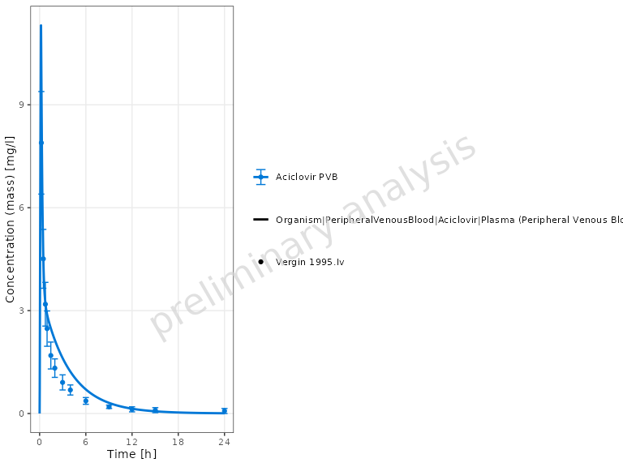
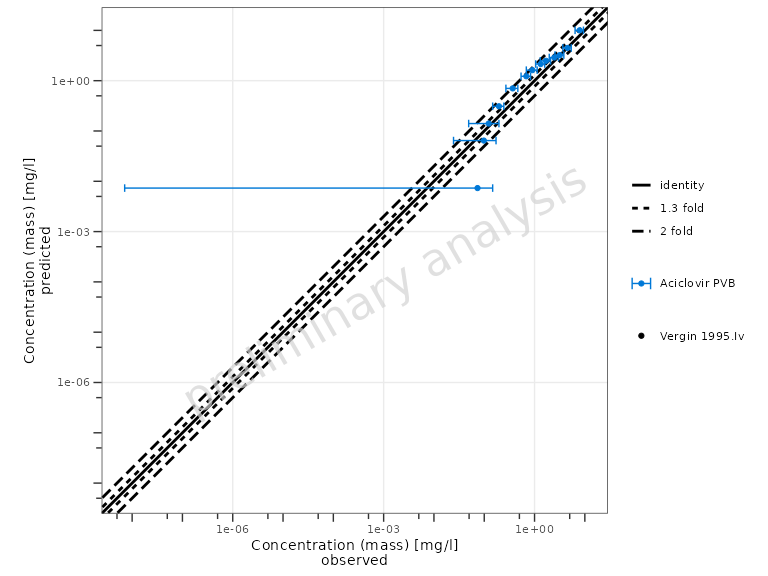
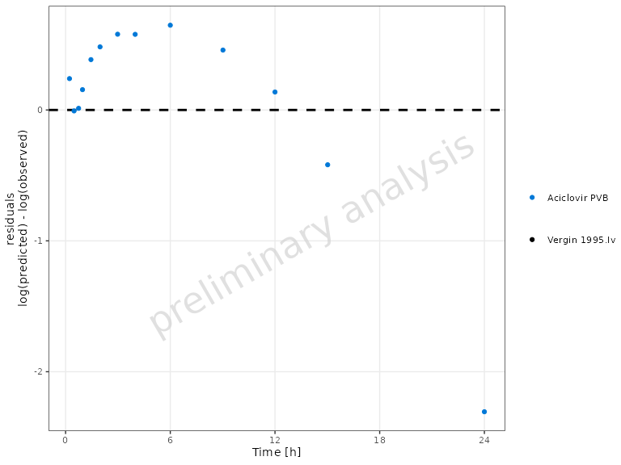
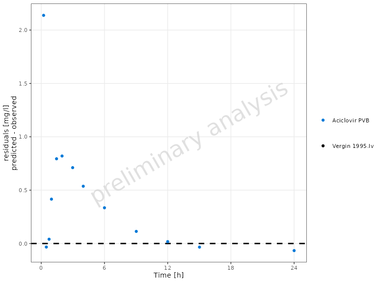
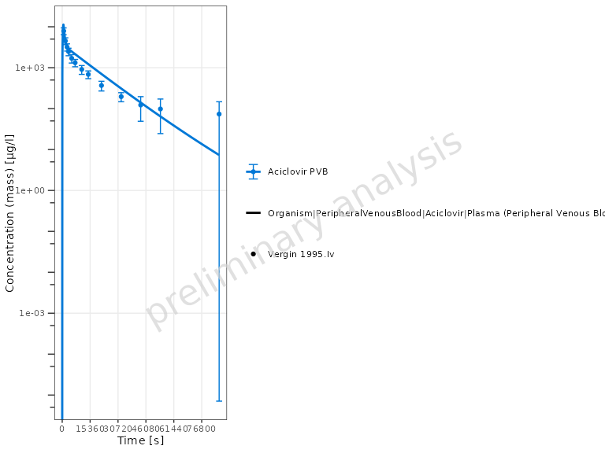
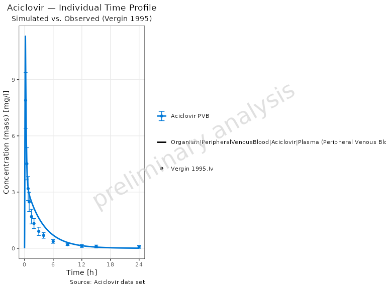
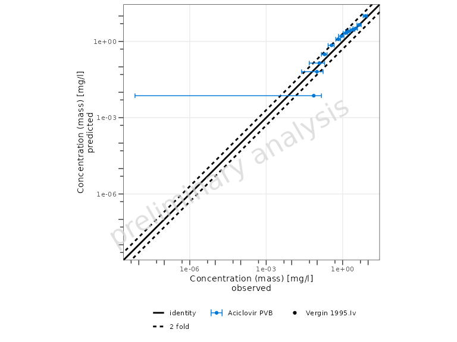
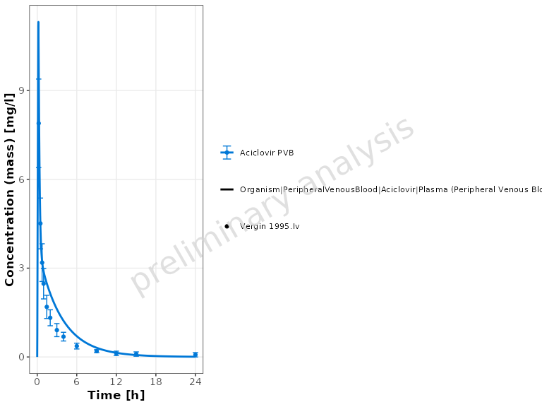
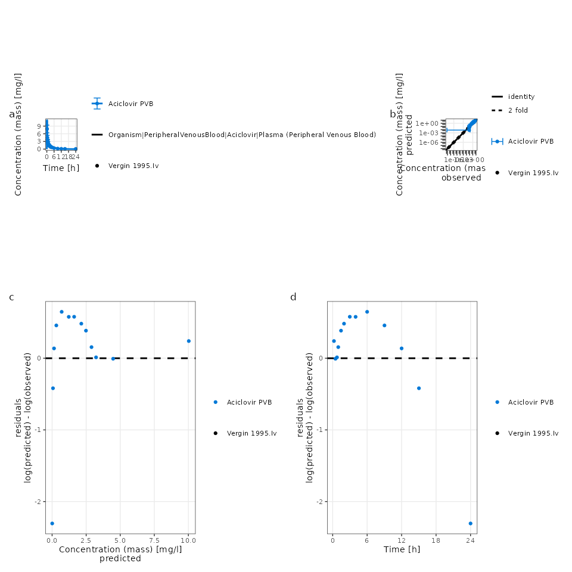
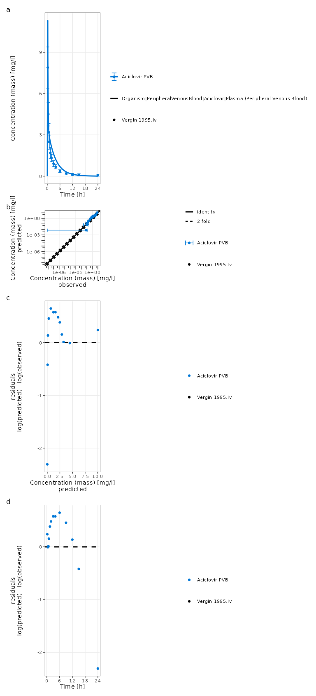

Visualizations with `DataCombined`
Source:vignettes/data-combined-plotting.Rmd
data-combined-plotting.RmdIntroduction
You have already seen how the DataCombined class can be
utilized to store observed and/or simulated data (if not, read Working with DataCombined
class).
Let’s first create a DataCombined object, which we will
use to demonstrate different visualizations available.
library(ospsuite)
# simulated data
simFilePath <- system.file("extdata", "Aciclovir.pkml", package = "ospsuite")
sim <- loadSimulation(simFilePath)
simResults <- runSimulations(sim)[[1]]
outputPath <- "Organism|PeripheralVenousBlood|Aciclovir|Plasma (Peripheral Venous Blood)"
# observed data
obsData <- lapply(
c("ObsDataAciclovir_1.pkml", "ObsDataAciclovir_2.pkml", "ObsDataAciclovir_3.pkml"),
function(x) loadDataSetFromPKML(system.file("extdata", x, package = "ospsuite"))
)
names(obsData) <- lapply(obsData, function(x) x$name)
myDataCombined <- DataCombined$new()
myDataCombined$addSimulationResults(
simulationResults = simResults,
quantitiesOrPaths = outputPath,
groups = "Aciclovir PVB"
)
myDataCombined$addDataSets(
obsData$`Vergin 1995.Iv`,
groups = "Aciclovir PVB"
)Time profile plots
Time profile plots visualize measured or simulated values against time and help assess if the observed data (represented by symbols and error bars) match the simulated data (represented by lines).
plotTimeProfile(myDataCombined)
Predicted versus observed scatter plot
Predicted versus observed plots allow to assess how far simulated results are from observed values.
plotPredictedVsObserved(myDataCombined)
The identity line represents perfect correspondence of simulated
values with the observed ones. By default, a “two-fold” range is marked
by the dashed lines. The “x-fold” range is defined as values that are
x-fold higher and 1/x-fold lower than the
observed ones. The user can specify multiple ranges by the
comparisonLineVector argument.
plotPredictedVsObserved(
myDataCombined,
comparisonLineVector = ospsuite.plots::getFoldDistanceList(folds = c(1.3, 2))
)
Residuals versus covariate scatter plots
Residual plots show if there is a systematic bias in simulated values either in high-concentration or low-concentration regions, or, alternatively, in early or late time periods.
plotResidualsVsCovariate(myDataCombined, xAxis = "predicted")
plotResidualsVsCovariate(myDataCombined, xAxis = "time")
Residuals of log values can be visualized with the
residualScale argument ("log" by default, or
"linear" / "ratio").
plotResidualsVsCovariate(
myDataCombined,
xAxis = "time",
residualScale = "linear"
)
Customizing plots
All functions return ggplot2 objects, so any standard
ggplot2 layer can be added directly.
Units and axis scaling
Pass xUnit / yUnit to set the display
units, and yScale to change the axis scale:
plotTimeProfile(
myDataCombined,
xUnit = ospUnits$Time$s,
yUnit = ospUnits$`Concentration [mass]`$`µg/l`,
yScale = "log"
)
Title, subtitle, and caption
plotTimeProfile(myDataCombined) +
ggplot2::labs(
title = "Aciclovir — Individual Time Profile",
subtitle = "Simulated vs. Observed (Vergin 1995)",
caption = "Source: Aciclovir data set"
)
Legend position
plotPredictedVsObserved(myDataCombined) +
ggplot2::theme(legend.position = "bottom")
Further theming
Any ggplot2::theme() element can be overridden:
plotTimeProfile(myDataCombined) +
ggplot2::theme(
axis.title = ggplot2::element_text(size = 13, face = "bold"),
axis.text = ggplot2::element_text(size = 11)
)
Creating multi-panel figures
Because each function returns a ggplot2 object, panels
can be assembled with the patchwork package:
library(patchwork)
p1 <- plotTimeProfile(myDataCombined) +
ggplot2::labs(tag = "a")
p2 <- plotPredictedVsObserved(myDataCombined) +
ggplot2::labs(tag = "b")
p3 <- plotResidualsVsCovariate(myDataCombined, xAxis = "predicted") +
ggplot2::labs(tag = "c")
p4 <- plotResidualsVsCovariate(myDataCombined, xAxis = "time") +
ggplot2::labs(tag = "d")
(p1 | p2) / (p3 | p4)
Control the layout with patchwork::plot_layout():
p1 / p2 / p3 / p4
Saving plots
Use ospsuite.plots::exportPlot() to save a plot to
disk:
plotObject <- plotTimeProfile(myDataCombined)
ospsuite.plots::exportPlot(
plotObject = plotObject,
filepath = "timeprofile.png",
width = 8,
height = NULL, # auto-computed from content
dpi = 300
)Or use ggplot2::ggsave() directly:
plotObject <- plotTimeProfile(myDataCombined)
ggplot2::ggsave(
filename = "timeprofile.png",
plot = plotObject,
width = 8,
height = 6,
dpi = 300
)Implementation details
All plotting functions in ospsuite make use of the ospsuite.plots package to prepare visualizations. To know more about this library, see its website.